EN 2022 ADECUAMOS LA INFRAESTRUCTURA PARA ESTABLECER LOS TRIBUNALES LABORALES, CONTINUAMOS CON LA OPERACIÓN DE LOS JUZGADOS ESPECIALIZADOS EN VIOLENCIA FAMILIAR CONTRA LA MUJER, HICIMOS PÚBLICO EL REGISTRO DE DEUDORES ALIMENTARIOS MOROSOS Y PUSIMOS EN MARCHA EL REGISTRO DE PERSONAS SANCIONADAS POR VIOLENCIA CONTRA LAS MUJERES
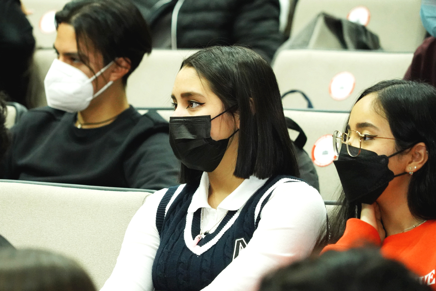
A través del Modelo de Justicia que opera en nuestro estado desde 2019, enfocamos como uno de sus pilares el acercamiento de la función de este poder público con las personas, a fin de consolidarnos como una instancia que de manera objetiva brinda certidumbre a la sociedad coahuilense en la resolución de sus conflictos, en apego a sus derechos humanos.
Para estar en posibilidad de resolver los problemas que aquejan a las y los habitantes de Coahuila, primero debemos conocer sus necesidades más importantes, y con base en ello establecer las estrategias institucionales que nos permitan atenderlas de manera satisfactoria y en el menor tiempo posible. En ese sentido, durante el año 2022 continuamos con la implementación de acciones concretas en ámbitos como los medios alternos de solución de controversias, los cuales representan una figura jurídica contemplada constitucionalmente para que las personas cuenten con herramientas eficaces que pongan remedio a sus problemáticas, sin tener que acudir ante un juzgado. Para ello tenemos el Centro de Medios Alternos de Solución de Controversias, órgano que nos permite garantizar procedimientos de esta naturaleza en estricto apego a la legalidad, mismo que continuó con un trabajo efectivo en este periodo que se informa.
En este ámbito de cercanía con las personas y su realidad, presentamos las actividades realizadas por nuestro Centro de Evaluación Psicosocial, como órgano de apoyo a la función jurisdiccional en la elaboración de dictámenes que sirven como sustento objetivo para que nuestras juezas y jueces, afianzados en información fidedigna brindada por las psicólogas y trabajadoras sociales que se entrevistan de manera directa con las partes que intervienen en los asuntos sometidos a su conocimiento, tomen sus determinaciones siempre en mayor beneficio de los intervinientes y de acuerdo a la ley.
Otra acción informada en este apartado, que constata la cercanía que mantiene el Poder Judicial con las y los justiciables, es lo referente a la continuación del programa de Justicia Itinerante operado a través del Instituto Estatal de Defensoría Pública, el cual pone a disposición de las personas, que por cuestiones económicas no pueden acudir a nuestras instalaciones, los servicios de asesoría y representación jurídica y legal en diversas ramas del derecho –ya sea en materia penal, cuando forman parte de un procedimiento de esta naturaleza, o en los ámbitos civil, mercantil, familiar y laboral–. Para esto contamos con abogadas y abogados con vasta experiencia y conocimiento, quienes prestan sus servicios de manera gratuita y en beneficio de la sociedad más vulnerable.
Mantuvimos nuestro compromiso con las mujeres y niñas coahuilenses, y en este sentido continuamos con la operación de los Juzgados Especializados en Violencia Familiar contra la Mujer, órganos que desde 2021 funcionan en nuestro estado como mecanismo eficaz para combatir las conductas que atentan contra la dignidad y seguridad de las mujeres, sus hijas e hijos. Es por ello que en este apartado reseñamos la actividad realizada por estos juzgados en Coahuila.
Para lograr todo lo anterior, es necesario que contemos con la infraestructura física adecuada para que las y los funcionarios adscritos a este poder presten la atención que la ciudadanía requiere. En ese tenor, y con el objetivo de brindar tanto a usuarios como a nuestro personal espacios dignos, durante 2022 seguimos con el compromiso de hacer las adecuaciones necesarias a los inmuebles que albergan a los órganos jurisdiccionales, no jurisdiccionales y administrativos en los ocho distritos judiciales de Coahuila. Estas acciones se traducen en palpables beneficios para la sociedad.
CENTRO DE MEDIOS ALTERNOS DE SOLUCIÓN DE CONTROVERSIAS
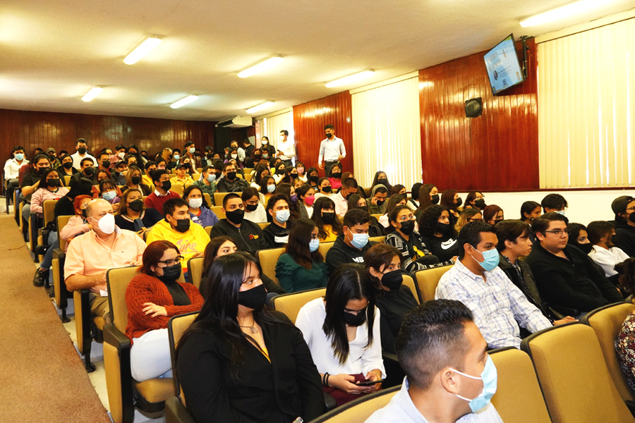
El Centro de Medios Alternos de Solución de Controversias (CEMASC) es el órgano del Poder Judicial facultado para operar los medios alternos en el estado. Tiene como deber procurar la solución extrajudicial de conflictos y prevenir el incremento de los mismos; es decir, a través de este centro buscamos el acercamiento de las partes para que mediante diálogo y comunicación efectiva resuelvan sus conflictos, con la asistencia de facilitadores debidamente capacitados y certificados que los orientarán en la toma de acuerdos equilibrados, acordes a la necesidad de cada situación.
Mediante el CEMASC promovemos la justicia alternativa cercana a la comunidad: llevamos a cabo la capacitación en habilidades para mejorar las relaciones sociales, así como en mediación escolar y comunitaria, a menores que se encuentran en el Centro de Internamiento Juvenil Varonil, con la in tención de proporcionarles herramientas para fortalecer sus relaciones dentro y fuera del centro. Ambos cursos fueron dirigidos a 36 adolescentes en internamiento.
Con la promoción y difusión del uso de mecanismos alternativos de solución de controversias, invitamos a las y los justiciables a resolver sus conflictos sin llegar a judicializarlos. Para ello, mediante el CEMASC realizamos entrevistas y orientaciones que facilitan la toma de acuerdos de solución de una forma efectiva, dialogada y basada en las necesidades de las partes involucradas.
Tabla 1. Servicios prestados por el Centro de Medios Alternos de Solución de Controversias
| Actividad | 2022 |
|---|---|
| Número de personas entrevistadas para la exploración y orientación del conflicto | 7897 |
| Invitaciones enviadas a efecto de acercar a otras partes involucradas en el conflicto | 10109 |
| Procedimientos de MASC iniciados | 2202 |
| Procedimientos concluidos con acuerdo | 1383 |
| Procedimientos reaperturados | 6 |
| Solicitantes que fueron orientados o derivados a otra instancia | 72 |
| Asuntos solicitados resueltos con la sola entrega de invitación | 33 |
Fuente: Centro de Medios Alternos de Solución de Controversias del Poder Judicial del Estado de Coahuila de Zaragoza. 2022.
Mediación prejudicial e intrajudicial
Con la firma de acuerdos de Medios Alternos de Solución de Controversias se ha evitado la apertura de mil 293 asuntos judiciales, como parte de los objetivos de los mecanismos alternativos para evitar que los conflictos crezcan o trasciendan a otras esferas.
Tabla 2. Resolución de asuntos pre-judiciales
| Actividad | 2022 |
|---|---|
| Asuntos prejudiciales resueltos por convenio | 1293 |
Fuente: Centro de Medios Alternos de Solución de Controversias del Poder Judicial del Estado de Coahuila de Zaragoza. 2022.
Dentro de los procesos de mecanismos alternativos realizados, hemos trabajado para llegar a acuerdos sobre conflictos que se encuentran en el área judicial en distintas materias. Este 2022 en el CEMASC realizamos 210 procedimientos intrajudiciales, de los cuales 83 pusieron fin a conflictos de carácter familiar, civil, mercantil y penal.
MEDIACIÓN EN MATERIA PENAL Y REPARACIÓN DEL DAÑO
Los mecanismos alternativos en materia penal ayudan al justiciable a tratar las situaciones que se desencadenaron del daño, ofensa o delito, principalmente en lo referente a la reparación del daño, que no necesariamente está vinculada a la sanción del responsable, sino que se plasma a través de un acuerdo reparatorio o plan de reparación enfocado a las necesidades de las víctimas.
En 2022 se iniciaron 113 asuntos de mecanismos alternativos penales en el estado, llegando a la cifra de 42 acuerdos, lo que se reflejó en 16 millones 453 mil 561 pesos otorgados a las víctimas como parte de la reparación del daño.
Tabla 3. Asuntos penales resueltos por mecanismos alternativos y montos por reparación del daño
| Asuntos penales | Cantidad |
|---|---|
| Iniciados | 113 |
| Resueltos por acuerdo | 42 |
| Monto anual de reparación del daño | 16453561 |
Fuente: Centro de Medios Alternos de Solución de Controversias del Poder Judicial del Estado de Coahuila de Zaragoza. 2022.
Una de las necesidades recurrentes de los justiciables es la prontitud del servicio y su solución. En nuestro Centro de Medios Alternos de Solución de Controversias nos enfocamos en dar resolución a los procedimientos en un plazo no mayor a 30 días, aportando con esto a que la justicia sea pronta entre los usuarios de los servicios que prestamos.
Como parte de la flexibilidad y la inmediatez en el proceso de mecanismos alternativos, contamos con mediaciones a distancia, las cuales ayudan a que los ciudadanos que tengan conflictos con quien radique en una localidad distinta puedan solicitar, iniciar y resolver sus controversias de forma rápida y económica. En este año atendimos 21 solicitudes, de las cuales se abrieron 10 expedientes de mecanismos alternativos, mismos que derivaron en cinco convenios.
CENTRO DE EVALUACIÓN PSICOSOCIAL
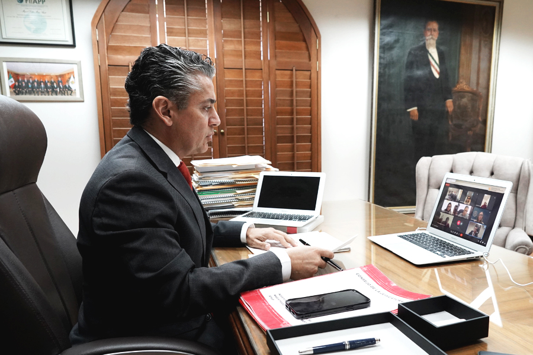
Con la finalidad de aproximar a la ciudadanía nuestra función de impartición de justicia, a través de servicios desempeñados de manera profesional por parte de personal adscrito a los órganos que apoyan en la labor jurisdiccional, en el Centro de Evaluación Psicosocial (CEP) realizamos dictámenes encaminados a proporcionar a las y los juzgadores información objetiva, real y en un contexto integral de las personas que forman parte de un proceso judicial, a fin de apoyarlos en el sustento a sus determinaciones.
Como parte de esta labor, las psicólogas y trabajadoras sociales de este centro, quienes cuentan con la experiencia y pericia requerida, recaban la información mediante visitas, entrevistas y el uso de mecanismos con un enfoque sistémico, que les permite analizar el contexto social y familiar para reflejar los elementos que sostienen la interacción de cada persona involucrada en un conflicto –que requiere de este diagnóstico dentro de un procedimiento ante los órganos jurisdiccionales–. En ese sentido, establecemos recomendaciones que, desde una perspectiva profesional, favorecen la resolución de dicho conflicto por parte de las y los jueces.
Para lograr lo anterior, a través de las ocho unidades con las que cuenta el CEP en todo el territorio del estado, en 2022 brindamos atención a 30 mil 994 personas, de las cuales se atendieron a 12 mil 491 en el área de psicología y a 18 mil 503 en el área de trabajo social.
Tabla 4. Personas atendidas en el Centro de Evaluación Psicosocial
| Personas atendidas | Total |
|---|---|
| Personas atendidas | 30994 |
| Personas atendidas por el área de Psicología del CEP | 12491 |
| Personas atendidas por el área de Trabajo social del CEP | 18503 |
Fuente: Centro de Evaluación Psicosocial del Poder Judicial del Estado de Coahuila de Zaragoza. 2022.
El resultado obtenido en este año fue la emisión de tres mil un dictámenes, de los cuales mil 968 fueron enviados a los juzgados y mil 33 informes de trabajo social se entregaron al área de Psicología, para fundamentar los dictámenes psicosociales.
Tabla 5. Informes realizados por personal del Centro de Evaluación Psicosocial
| INFORMES REALIZADOS | TOTAL |
|---|---|
| Dictámenes entregados a Juzgados | 1968 |
| Informes de Trabajo Social, entregados a Psicología | 1033 |
Fuente: Centro de Evaluación Psicosocial del Poder Judicial del Estado de Coahuila de Zaragoza. 2022.
Asimismo, los juzgados de primera instancia nos requirieron mil 412 solicitudes de evaluaciones psicosociales, así como mil 894 solicitudes diversas, de las cuales 799 fueron para realizar estudios socioeconómicos, sociales y de posesión del menor, 944 de pruebas de capacidad de comparecencia, 105 pruebas de capacidad jurídica y 46 solicitudes de órganos internos.
Tabla 6. Casos canalizados al Centro de Evaluación Psicosocial, por tipo.
| Casos canalizados | Total |
|---|---|
| Evaluaciones psicosociales | 1412 |
| Estudios socioeconómicos | 799 |
| Comparecencias | 944 |
| Capacidad jurídica | 105 |
| Casos referidos órganos internos | 46 |
| Casos referidos por Juzgados Especializados en Violencia Familiar contra la Mujer | 587 |
| Total | 3893 |
Fuente: Centro de Evaluación Psicosocial del Poder Judicial del Estado de Coahuila de Zaragoza. 2022.
Con la finalidad de mantenernos bajo el enfoque de imparcialidad que debe prevalecer en estos asuntos, y para que las y los usuarios evaluados mantengan la certeza de que se dará al juzgador el resultado con información objetiva, realizamos 27 mil 822 entrevistas, de las cuales 10 mil 428 fueron por parte del área de Psicología y 17 mil 394 realizadas por personal de Trabajo Social, así como 19 mil 766 visitas domiciliarias.
Tabla 7. Entrevistas y visitas domiciliarias realizadas por el Centro de Evaluación Psicosocial
| Entrevistas y visitas domiciliarias | Total |
|---|---|
| Realizadas por el área de Trabajo Social del CEP | 17394 |
| Realizadas por el área de Psicología con objeto evaluatorio | 10428 |
| Visitas domiciliarias | 19766 |
Fuente: Centro de Evaluación Psicosocial del Poder Judicial del Estado de Coahuila de Zaragoza. 2022.
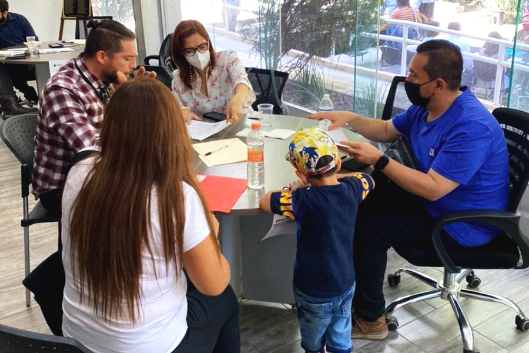
Las solicitudes de pruebas de capacidad en menores incluyeron a 562 niños y 567 niñas, quienes resultaron en 52 por ciento como aptos para acudir ante el juez a rendir su testimonio. Para estos efectos, consideramos en cada asunto la etapa de desarrollo en la que se encuentran las y los menores, y evaluamos el riesgo de que sean involucrados en un conflicto de lealtades que afecte su estabilidad emocional.
Del porcentaje mencionado de menores aptos para acudir a comparecer ante el juez, con apoyo del personal de Psicología, asistimos a 382 audiencias con el propósito de brindarles el acompañamiento al que tienen derecho, en apego al interés superior de la niñez que debe prevalecer en este tipo de asuntos –donde se ven involucrados de alguna manera–.
Apoyamos a los Juzgados Especializados en Violencia Familiar contra las Mujeres desde el comienzo de sus funciones en el año 2021, elaborando diagnósticos de interacción familiar con el fin de establecer de manera objetiva, y en el menor tiempo posible, la información correspondiente de cada asunto, para que las personas juzgadoras determinen las medidas correspondientes para dar la protección necesaria a las víctimas de violencia. En ese sentido, este año emitimos 587 diagnósticos, en donde brindamos atención a cinco mil 662 personas, realizamos cuatro mil 346 visitas domiciliarias y acudimos a 435 audiencias, con el objeto de testificar como peritos expertos en los distritos judiciales de Coahuila.
Es importante mencionar que cada dictamen enviado al juzgado debe ser desahogado en una audiencia y con las formalidades establecidas en la legislación procedimental de cada materia. En esta audiencia, las partes tienen el derecho de controvertir e interrogar al perito encargado de emitir el dictamen, quien debe contar con la fundamentación profesional y metodológica para sustentar su intervención. En 2022 asistimos a mil 954 audiencias para estos efectos.
REGISTRO ESTATAL DE DEUDORES ALIMENTARIOS MOROSOS (REDAM)
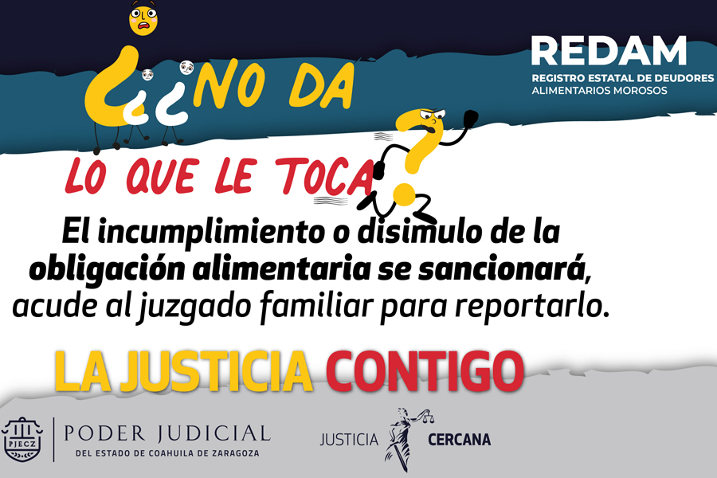
Tal como lo dispone la Ley para la Familia de Coahuila de Zaragoza, este poder público tiene a su cargo el manejo del Registro Estatal de Deudores Alimentarios Morosos, base de datos que integra a las personas que han dejado de cumplir de manera consecutiva o intermitente con su obligación de proveer alimentos.
Para tales efectos durante este año expedimos 161 constancias de no registro, tanto a particulares como a la Procuraduría para Niños, Niñas y la Familia (PRONNIF), en apoyo en los procesos de adopción para los cuales este documento es requisito.
Con el afán de dar acceso a la ciudadanía al padrón de quienes se encuentran inscritos en este registro, dentro del portal del Poder Judicial del Estado pusimos a disposición un apartado para la consulta abierta de esta información, derivada de los juzgados familiares en el estado. A la fecha se encuentran 131 personas registradas.
A través de nuestras redes sociales y el sitio web del Poder Judicial, difundimos la campaña “¿No da lo que le toca?” para motivar a las personas acreedoras a acudir a los juzgados familiares para reportar el incumplimiento de la obligación alimentaria, y se realice el registro consecuente de la persona deudora en el REDAM.
JUSTICIA ITINERANTE
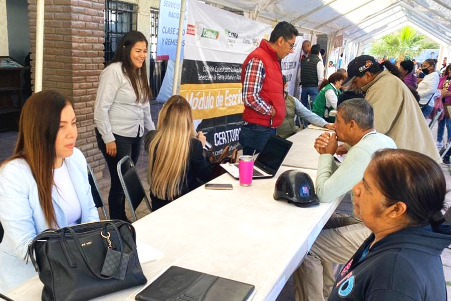
Continuamos con el Programa Justicia Itinerante, el cual tiene como objetivo acercar los servicios del Poder Judicial a personas de comunidades, ejidos o localidades alejadas de nuestras instalaciones, mediante brigadas informativas y de asesoría jurídica en donde nuestro personal orienta a los usuarios sobre la forma de acceder a una solución a sus conflictos con asistencia legal.
Este año atendimos a cuatro mil 519 usuarios mediante 469 brigadas informativas y de asesoría jurídica en el estado.
Este programa, que inició el año anterior en apoyo a la ciudadanía más vulnerable al acceso a la justicia, nos exigió evaluar el grado de satisfacción de las personas beneficiadas: pasamos de obtener 98.28% en 2021 a un nivel de satisfacción de 99.93% este año. Con el propósito de mantenernos como un Poder Judicial cercano a las personas que más lo necesitan, así como dar celeridad a los procesos jurisdiccionales, nos enfocamos en implementar acciones que den atención a los problemas que más aquejan a la ciudadanía.
INSTITUTO ESTATAL DE DEFENSORÍA PÚBLICA
A través del Instituto Estatal de Defensoría Pública de Coahuila de Zaragoza (IEDP) mantuvimos el trabajo que permite garantizar a las personas su derecho constitucional a una debida defensa técnica y jurídica, que coadyuva en la construcción del Estado de Derecho.
Enfatizamos nuestro carácter social, derivado de la gratuidad de nuestros servicios y la atención a las personas de escasos recursos económicos y grupos vulnerables de la sociedad, por lo que continuamos procurando una tutela efectiva de sus derechos e intereses.
En 2022 brindamos atenciones de este tipo a 206 mil 951 personas en el estado. A través de la Unidad de Defensa Administrativa y Asesoría Jurídica, 68 mil 202; 64 mil 386 más en la Unidad de Defensa Civil, Familiar y Mercantil; y 48 mil 549 en la Unidad de Defensa Penal. Además de ocho mil 266 mediante la Coordinación de Calidad; 574 por la Coordinación de Comunicación Social; y 271 por la Coordinación Académica y de Servicio Civil de Carrera.
Tabla 8. Personas atendidas en el IEDP
| Año | Personas atendidas |
|---|---|
| 2022 | 206951 |
Fuente: Instituto Estatal de Defensoría Pública. Poder Judicial del Estado de Coahuila de Zaragoza. 2022
Asimismo atendimos a 16 mil 703 personas vía telefónica, de las cuales ocho mil 489 corresponden al servicio que brinda el Taller de Orientación Prematrimonial (TOP) adscrito a la Unidad de Defensa Administrativa, y ocho mil 214 más a través de las distintas áreas del IEDP.
Con la finalidad de mantener a nuestros usuarios informados sobre el avance de sus asuntos, también prestamos servicios mediante visitas domiciliarias, vía telefónica, mensajes de texto, videollamadas y correos electrónicos.
UNIDAD DE ASISTENCIA ADMINISTRATIVA Y ASESORÍA JURÍDICA
Durante 2022, en la Unidad de Asistencia Administrativa y Asesoría Jurídica del IEDP realizamos diversas acciones y actividades dirigidas a extender nuestros servicios a la población económicamente más vulnerable, y en general a toda la comunidad coahuilense, brindando atención a distancia a 68 mil 202 personas mediante visitas domiciliarias y brigadas de prevención e información.
El primer contacto con las y los usuarios en la prestación de nuestros servicios es a través de las áreas de Enlace, Trabajo Social y Atención Inicial del IEDP, donde este año recibimos a 47 mil 178 personas.
En continuidad a lo dispuesto en el convenio de colaboración efectuado entre el Poder Judicial y el Sistema para el Desarrollo Integral de la Familia y Protección de Derechos del Estado (DIF Coahuila), relativo a su programa de Adultos Mayores en Abandono (AMA), apoyamos con asesoría legal a 78 personas para la generación de acciones jurídicas, o mediante soluciones alternas, para resolver sus conflictos en esta materia.
En 2022 también concretamos la atención a ocho mil 67 parejas en todo el estado con la impartición del Taller de Orientación Prematrimonial, mismo que fue realizado mediante la plataforma virtual Google Meet.
Y efectuamos servicios dirigidos a servidoras y servidores públicos que forman parte de algún procedimiento administrativo, para lo cual les brindamos representación jurídica en 91 asuntos de esta naturaleza.
UNIDAD DE DEFENSA CIVIL, FAMILIAR Y MERCANTIL
La Unidad de Defensa Civil, Familiar y Mercantil, del Instituto Estatal de Defensoría Pública, tiene como objetivo proporcionar asesoría y representación legal en esas materias a personas que no cuentan con medios económicos para sufragar los gastos de un abogado particular.
Durante este año, atendimos a 64 mil 386 personas, iniciamos siete mil 148 asuntos y concluimos seis mil 683 procedimientos ante las instancias jurisdiccionales correspondientes. Además de beneficiar a nuestros usuarios directos, con los servicios que proporcionamos brindamos certeza y seguridad jurídica a su entorno, ya que la atención a un conflicto de índole familiar, civil o mercantil, propicia bienestar y tranquilidad a las personas cercanas a las partes involucradas.
UNIDAD DE DEFENSA PENAL
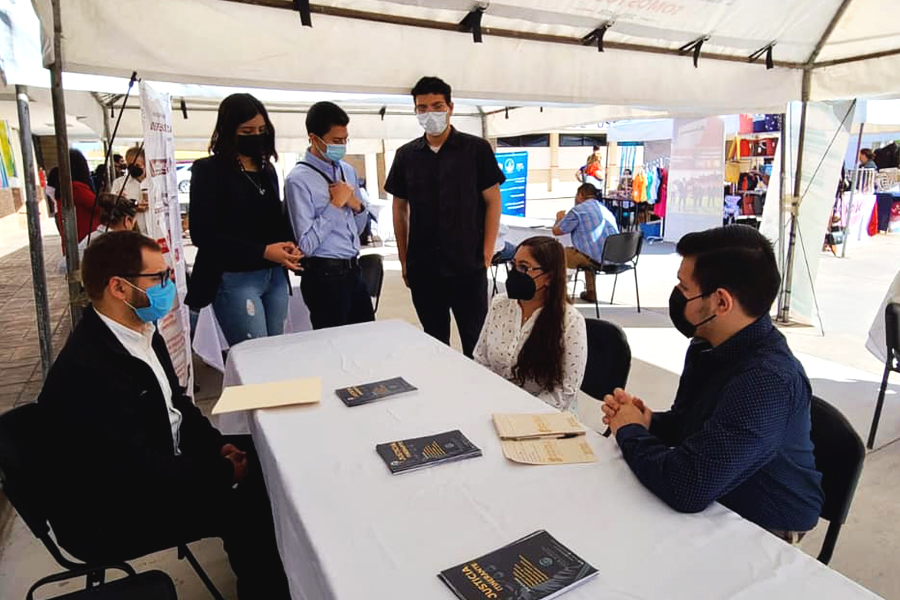
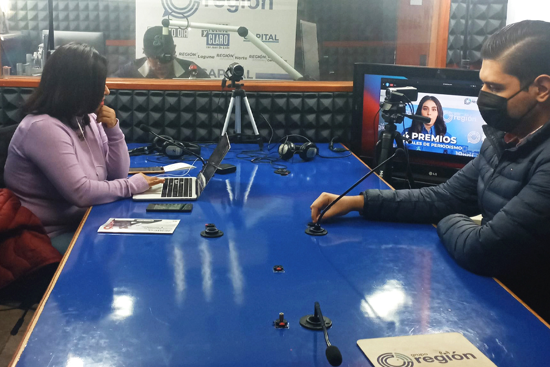
Damos cumplimiento al artículo 20, apartado B, fracción VIII, de la Constitución Política de los Estados Unidos Mexicanos, que dispone que toda persona imputada tiene derecho a una defensa adecuada por un abogado, al cual elegirá libremente incluso desde el momento de su detención; y en caso de no contar con un particular, el juez le designará un defensor público. En el Poder Judicial contamos con un cuerpo de defensores públicos adscritos al IEDP para llevar a cabo tal tarea en apoyo a imputados o sentenciados, ya sean adultos o adolescentes, para trámites procesales o de ejecución de penas.
Nuestros defensores asumen la obligación de proteger los derechos de las personas que enfrentan un procedimiento penal, realizando sus funciones con responsabilidad, profesionalismo y ética. Esto se refleja en una atención de calidad, trato digno y con sentido humano, ejerciendo una defensa técnica y adecuada.
Para el buen desempeño de las funciones de nuestros defensores, les ofrecemos capacitación constante, y también nos apoyamos en su experiencia para realizar cursos en el Sistema Acusatorio y Oral destinados a defensores particulares y estudiantes de derecho, reafirmando de esta manera nuestro compromiso con la sociedad y la comunidad jurídica del estado. El año que se informa instruimos a las y los defensores del IEDP en la atención de los asuntos que se llevan ante los Juzgados Especializados en Violencia Familiar contra las Mujeres.
En coordinación con las autoridades administrativas de los Centros de Reinserción Social de Saltillo, Torreón y Piedras Negras, y con las de los Centros de Justicia Penal, implementamos estrategias para agilizar los procedimientos de ejecución y promover así la salida anticipada de los sentenciados que alcancen este beneficio.
Bajo el Sistema Penal tradicional y el Sistema Penal Acusatorio y Oral, en 2022 atendimos a 38 mil 536 personas y realizamos 45 mil 061 gestiones, entre asesorías, promociones y asistencia a audiencias. Iniciamos nueve mil 975 asuntos y concluimos ocho mil 88 asuntos
Tabla 9. Asuntos atendidos en la Unidad de Defensa Penal del IEDP
| Rubro | Cantidad |
|---|---|
| Asuntos iniciados | 9975 |
| Asuntos concluidos | 8088 |
Fuente: Instituto Estatal de Defensoría Pública de Coahuila de Zaragoza. 2022
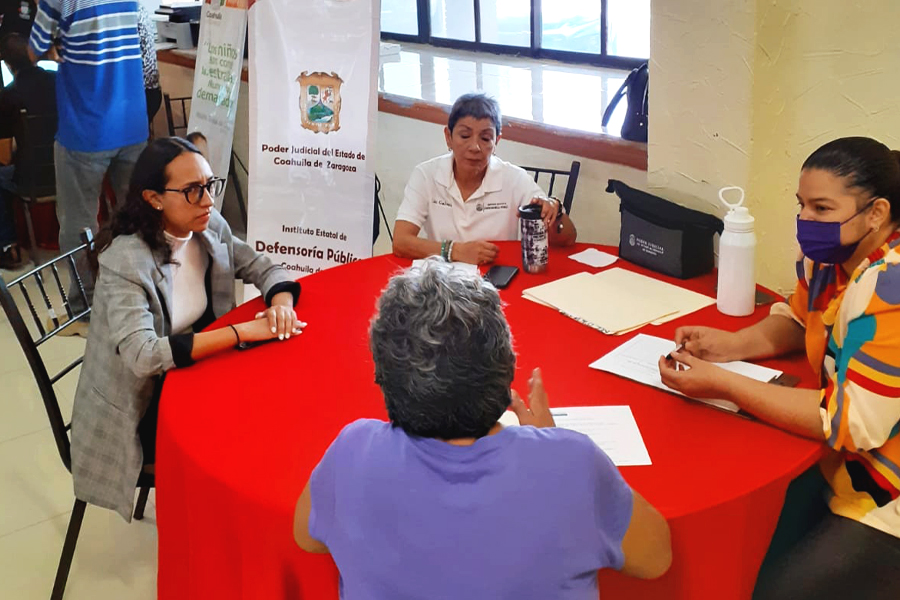
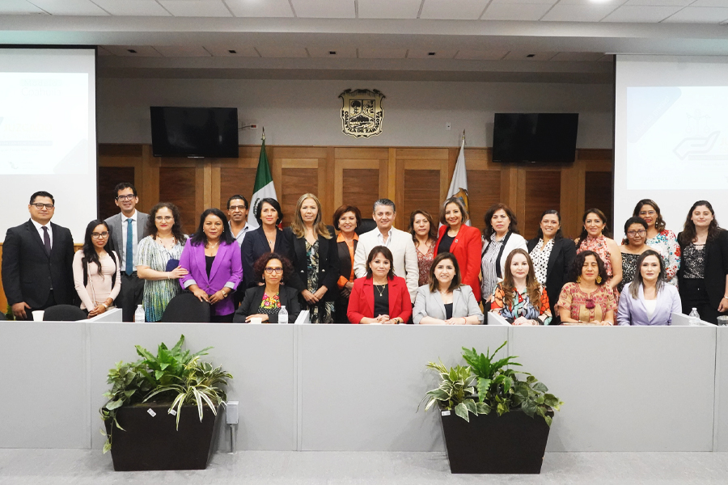
De esta forma podemos mencionar que las delegaciones del Instituto Estatal de Defensoría Pública con mayor número de asuntos iniciados y concluidos, y de audiencias desahogadas, son Monclova, Piedras Negras, Saltillo y Torreón. Asimismo, del número de asuntos que se judicializan en materia penal en el estado conservamos bajo nuestra responsabilidad un aproximado de 84 por ciento de los mismos, cifra que se mantiene en los últimos tres años, lo que refleja la confianza de la ciudadanía en los servicios que le proporcionan las y los defensores públicos.
JUZGADOS ESPECIALIZADOS EN VIOLENCIA FAMILIAR CONTRA LA MUJER
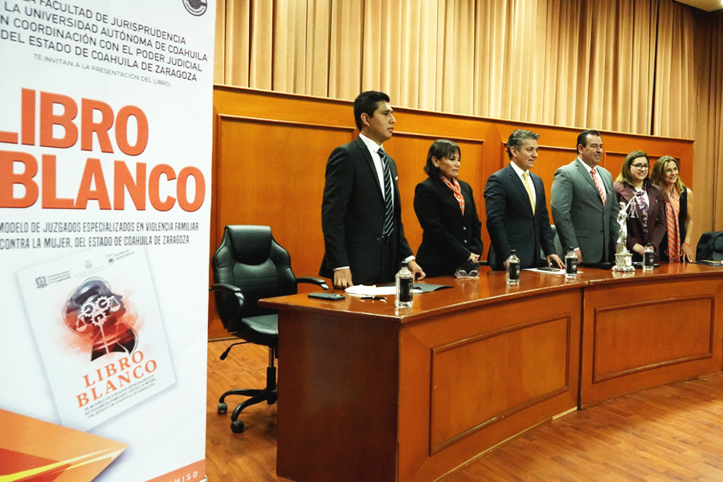
El 18 de enero de 2022 conmemoramos el primer aniversario de los Juzgados Especializados en Violencia Familiar contra la Mujer, en el Palacio de Gobierno, en Saltillo, donde se hizo entrega de reconocimientos a las instituciones que colaboran día con día en el funcionamiento de dichas instancias. Asimismo, presentamos el Libro Blanco titulado “El Modelo de Juzgados Especializados en Violencia Familiar Contra la Mujer del Estado de Coahuila de Zaragoza”, documento que describe el proceso de creación y funcionamiento de estos juzgados. Por ello difundimos esta publicación entre el alumnado de la Facultad de Jurisprudencia en Saltillo y la Facultad de Derecho de Torreón.
Al ser pioneros nacionales en la creación de este modelo de competencia mixta, durante 2022 trabajamos en su difusión para que sea replicado en otras entidades, como un referente de éxito en la atención de casos de violencia familiar contra las mujeres. En abril recibimos la visita de operadores del sistema de justicia de los estados de Morelos, Nayarit, Querétaro, Quintana Roo, Sinaloa y Zacatecas, quienes acompañados por personal del Instituto Nacional de las Mujeres presenciaron la celebración de una audiencia en la materia.
Trabajamos con la Agencia de los Estados Unidos para el Desarrollo Internacional (USAID) para socializar el modelo con operadores jurídicos del estado de Sonora. Contamos con la visita de personal del Poder Judicial del Estado de Baja California, con quienes mantuvimos un intercambio integral del proceso de creación –actualmente ya cuentan con la reforma aprobada para su creación–. Y gracias al intercambio de experiencias, el estado de Querétaro ya instituyó este modelo de juzgado.
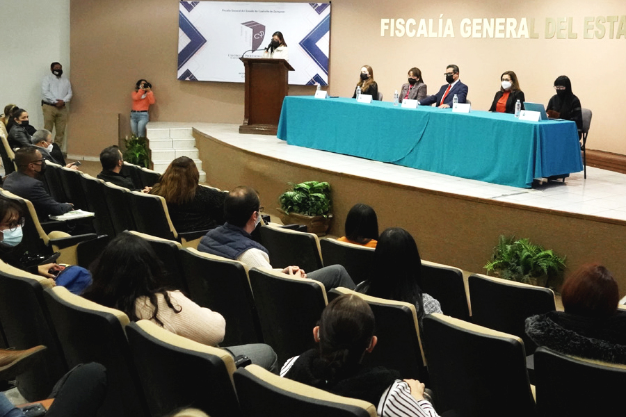
Finalmente, como parte del seguimiento en la implementación de los juzgados especializados, a lo largo del año celebramos diversas reuniones con personal de los Centros de Justicia y Empoderamiento de las Mujeres, de la Fiscalía General del Estado y del Instituto Coahuilense de las Mujeres, con el propósito de mantener el esquema de colaboración y la mejora continua para el funcionamiento de los mismos.
REGISTRO ESTATAL DE PERSONAS SANCIONADAS POR VIOLENCIA CONTRA LAS MUJERES
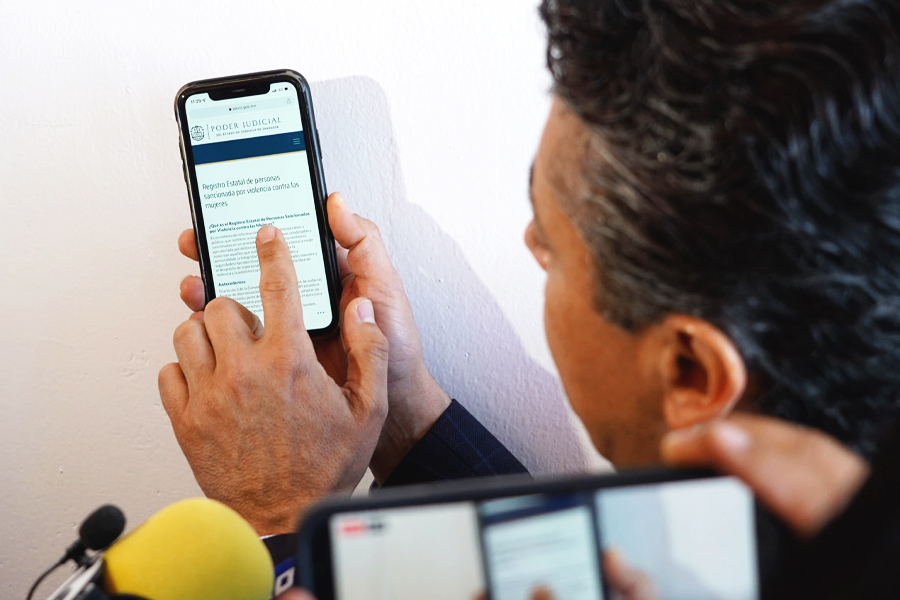
En 2022, mediante el Acuerdo C-009/2022 emitido por el Consejo de la Judicatura del Estado de Coahuila de Zaragoza, aprobamos la creación del Registro Estatal de Personas Sancionadas por Violencia contra las Mujeres (REPVM), como herramienta para la prevención de la violencia contra las mujeres y la generación de políticas públicas en esta materia Este sistema de información, de carácter administrativo y público, se encuentra disponible en el portal del Poder Judicial, y contiene la inscripción de personas condenadas y sancionadas en un procedimiento penal por una sentencia ejecutoriada por delitos que implican violencia contra las mujeres, en aquellos casos en que vulneren el desarrollo de la personalidad, la integridad corporal, las libertades y seguridades reproductivas, sexuales y del desarrollo de la personalidad, la vida, y la familia libre de violencia y la subsistencia familiar.
Con esta herramienta buscamos coadyuvar en la garantía de los derechos de las mujeres a una vida libre de violencia y de acceso a la información, además de constituir un mecanismo de prevención y protección para atender el factor de riesgo de reincidencia y repetición de conductas de violencia contra las mujeres, a favor de las víctimas o potenciales víctimas. A la fecha se cuenta con un registro de 847 personas.
ESPACIOS DIGNOS Y ADECUADOS
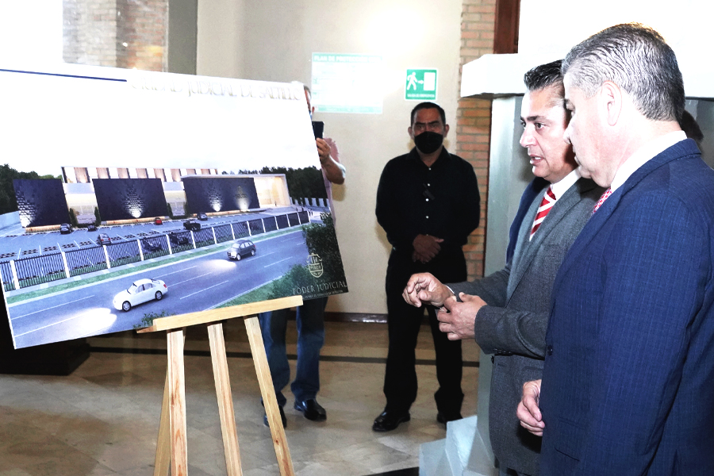
A fin de preservar la calidad en los inmuebles destinados a la prestación de nuestros servicios, realizamos una planeación estructurada del mantenimiento necesario que nos permita contar con lugares dignos para brindar atención accesible a todas y todos los coahuilenses.
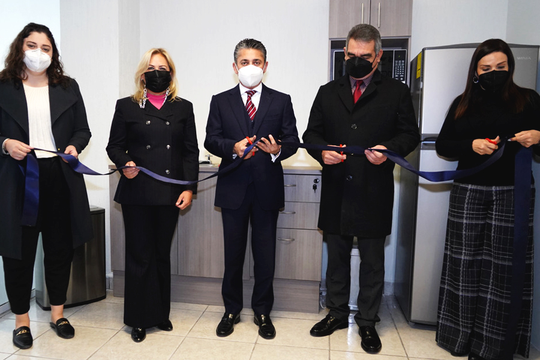
Continuamos con nuestro compromiso de ofrecer al personal que integra este poder público espacios de trabajo dignos, basados en sus necesidades. Nos enfocamos en la adecuación y transformación de las áreas disponibles que garanticen la seguridad, la tecnología necesaria y nos permitan brindar nuestros servicios de manera idónea.
ADECUACIÓN A LA INFRAESTRUCTURA EN LOS DISTRITOS JUDICIALES
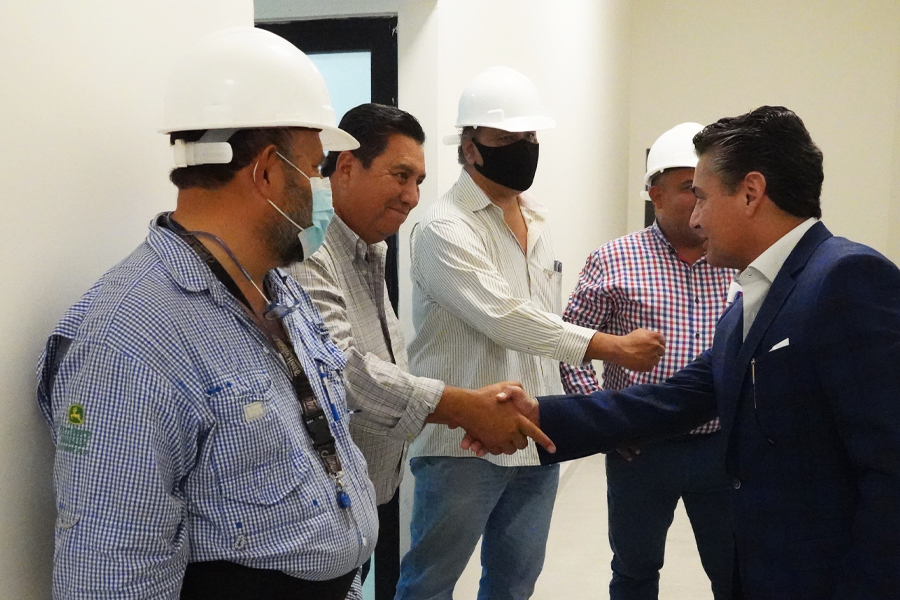
En el Distrito Judicial de Acuña realizamos acciones de electricidad, dotamos de mobiliario necesario y acciones de rehabilitación y mejoramiento de imagen a distintas áreas. Además, en cumplimiento a la programación anual, llevamos acciones de impermeabilización, mantenimiento preventivo y fumigación a las instalaciones que albergan oficinas del Poder Judicial en esta demarcación.
En el Distrito Judicial de Monclova hicimos labores de mantenimiento general, fontanería, fumigación y electricidad. Asimismo, en los diferentes inmuebles de este distrito realizamos adecuaciones diversas e instalamos el área de lactario en el Centro de Justicia Civil y Familiar. Dotamos también de material y mobiliario, como estantería de carga pesada, al Archivo Regional para el adecuado resguardo y conservación de expedientes.
En el Distrito Judicial de Parras de la Fuente cumplimos con la planeación anual para llevar a cabo acciones de impermeabilización, mantenimiento preventivo y correctivo de instalaciones, así como de fumigación.
En el Distrito Judicial de la Región Carbonífera propiciamos el correcto funcionamiento del Centro de Justicia en esa región con el mobiliario requerido y la habilitación de los espacios que lo integran; y también se impermeabilizó el Juzgado de Primera Instancia en Materia Penal del Sistema Acusatorio y Oral.
En el Distrito Judicial de Río Grande implementamos acciones de jardinería, pintura y electricidad, y revisamos el equipamiento del Juzgado de Primera Instancia en Materia Penal del Sistema Acusatorio y Oral de Piedras Negras. Mientras que en el Centro de Justicia Civil y Familiar realizamos labores de mantenimiento general, limpieza, electricidad y fontanería; y además dotamos de material como estantería de carga pesada al Archivo Regional para cubrir la necesidad de mobiliario.
En el Distrito Judicial de San Pedro de las Colonias dimos mantenimiento preventivo a los equipos de aire acondicionado y cumplimos con las actividades programadas de fumigación e impermeabilización. Además, en el edificio que alberga el Centro de Justicia Penal realizamos la reparación de la cerca perimetral.
En el Distrito Judicial de Saltillo llevamos a cabo inspecciones a los equipos de aire acondicionado y a la instalación eléctrica, e hicimos mejoras de fontanería y pintura. En el inmueble que aloja, entre otras áreas, la Oficialía Mayor, el Consejo de la Judicatura, el Instituto Estatal de Defensoría Pública, el Centro de Medios Alternos de Solución de Controversias, el Centro de Evaluación Psicosocial y el Tribunal de Conciliación y Arbitraje, dimos mantenimiento a los equipos de aire central y realizamos acciones preventivas y correctivas de electricidad, fontanería y reparaciones generales.
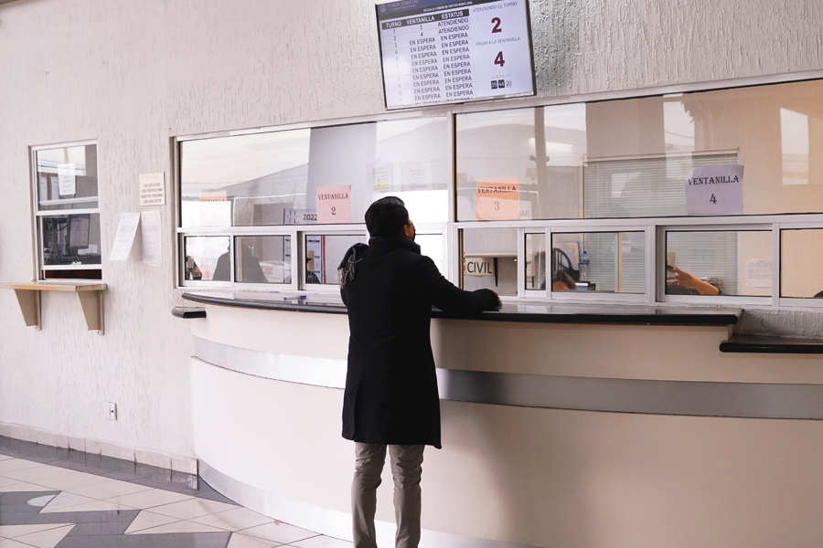
En las instalaciones de los Juzgados Mercantiles realizamos las adecuaciones necesarias para el buen funcionamiento de las oficinas que integran esta área. Asimismo, en el Centro de Justicia Civil y Familiar nos abocamos a la supervisión de los equipos de aire acondicionado, planta de luz, bomba contra incendios, sistema fotovoltaico, y el sistema de suministro y distribución de agua; y también realizamos labores de pintura y reparaciones generales. En el Centro de Justicia Penal, efectuamos reparaciones generales, limpieza y mantenimiento de áreas verdes.
En 2022 adquirimos, mediante un proceso de invitación restringida, un vehículo tipo camioneta para el cumplimiento de las diligencias propias de la Presidencia del Tribunal Superior de Justicia.
Gracias a la donación por parte del Gobierno del Estado de un predio de 20 mil metros cuadrados, trabajamos en el Proyecto Ejecutivo del inmueble que albergará la Ciudad Judicial en Saltillo, que contará con áreas destinadas a juzgados civiles, familiares, mercantiles, del tribunal laboral y el Centro de Conciliación Laboral, además de áreas de medios alternos, asesoría jurídica, evaluación psicosocial, capacitación, archivo judicial, además de áreas administrativas y de servicio.
En el Centro Justicia Civil y Familiar dimos cumplimiento a la programación anual de mantenimiento preventivo y correctivo con la revisión de las instalaciones eléctricas, el elevador y actividades de fumigación.
En las instalaciones que hoy ocupan el Instituto de Especialización Judicial y la Secretaría Técnica y de Transparencia, realizamos las adecuaciones necesarias a los espacios de las distintas oficinas.
En el Distrito Judicial de Torreón llevamos a cabo la revisión de los aparatos de aire acondicionado en los Juzgados Familiares y en la Sala Regional, cambiamos luminarias en distintas oficinas y realizamos labores de fontanería. Aunado a ello, en seguimiento a la programación anual, realizamos acciones de mantenimiento preventivo, pintura, jardinería, fumigación y electricidad en diversas áreas. Además de que dotamos al Archivo Regional con estantería de carga pesada para cubrir la necesidad de este tipo de mobiliario.
Durante este año atendimos 815 requerimientos de material de oficina, limpieza, ferretería, refacciones de cómputo y mobiliario de oficina, así como 527 órdenes de compra y 288 órdenes de servicio de mantenimiento en general y mantenimiento de vehículos de los inmuebles que alojan juzgados, áreas administrativas, salas y oficinas que conforman el Poder Judicial del Estado.
Durante el presente año se concluyó el acondicionamiento de las instalaciones de los Tribunales Laborales en Frontera y Piedras Negras, construidos con subsidios federales recibidos en 2021.
Para dicho fin, realizamos adecuaciones en los Centros de Justicia de Acuña y de la Región Carbonífera con el propósito de contar con los espacios requeridos para los Tribunales Laborales. En el caso de Saltillo y Torreón habilitamos espacios temporales, al tiempo que se gestionaron los proyectos para los espacios definitivos. De esta forma la nueva justicia laboral en Coahuila comienza en áreas óptimas.
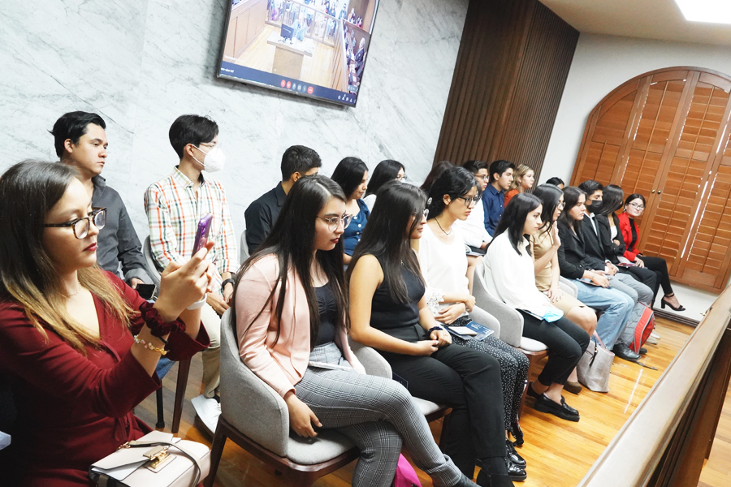
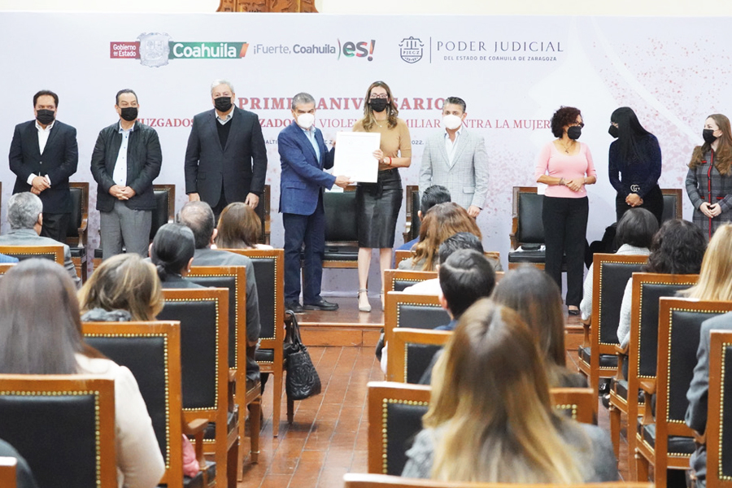
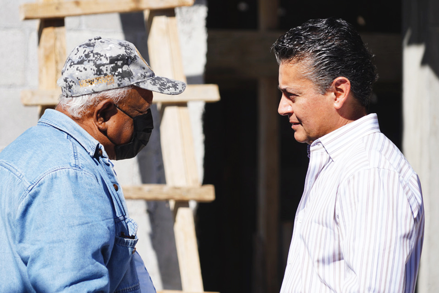
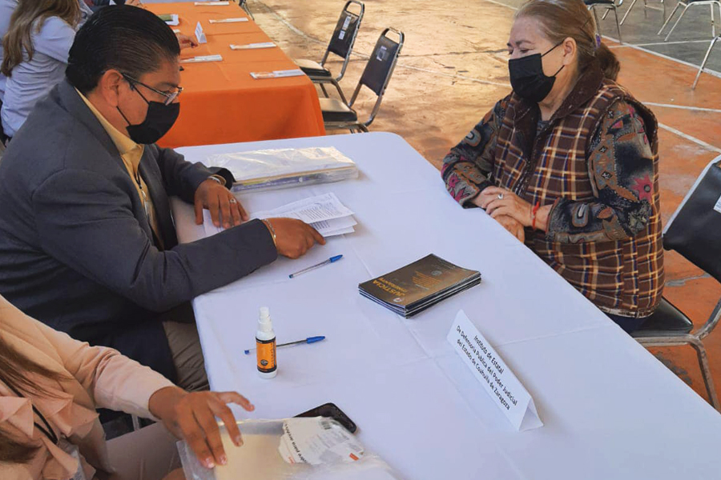
de la Región Carbonífera
Centro de Justicia de Ciudad Acuña
Centro de Justicia Laboral de Piedras Negras
Centro de Justicia Laboral de Monclova
Adecuación a la infraestructura